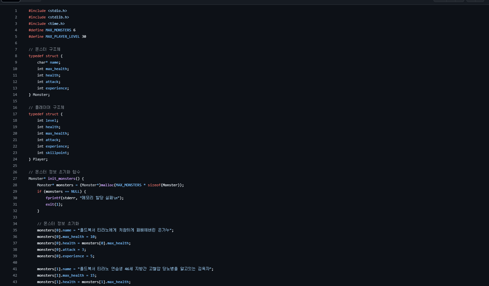

C/C++ 소개
C/C++는 고성능 애플리케이션 및 게임 개발에 널리 사용되는 프로그래밍 언어입니다.

주요 기능
- 고성능 시스템 프로그래밍
- 메모리 관리
- 게임 엔진 개발
적용 사례
- 운영체제 개발
- 게임 개발
- 실시간 애플리케이션
Server source code
// HTTP 80port Server
#include
#include
#include
#include
#include
#include
#pragma comment(lib, "ws2_32.lib")
#define PORT 8080
#define BUFFER_SIZE 1024
#define ROOT "."
const char* get_content_type(const char* path) {
const char* ext = strrchr(path, '.');
if (!ext) return "application/octet-stream";
if (strcmp(ext, ".html") == 0) return "text/html";
if (strcmp(ext, ".css") == 0) return "text/css";
if (strcmp(ext, ".js") == 0) return "application/javascript";
if (strcmp(ext, ".png") == 0) return "image/png";
if (strcmp(ext, ".jpg") == 0 || strcmp(ext, ".jpeg") == 0) return "image/jpeg";
return "application/octet-stream";
}
void send_response(SOCKET client_socket, const char* path) {
char full_path[BUFFER_SIZE];
snprintf(full_path, sizeof(full_path), "%s%s", ROOT, path);
// 파일 경로 출력
printf("Requested path: %s\n", full_path);
FILE* file = fopen(full_path, "rb");
if (!file) {
const char* not_found_response = "HTTP/1.1 404 Not Found\r\nConnection: close\r\n\r\n";
send(client_socket, not_found_response, strlen(not_found_response), 0);
printf("File not found: %s\n", full_path); // 추가된 디버깅 메시지
return;
}
struct stat st;
stat(full_path, &st);
long file_size = st.st_size;
char response_header[BUFFER_SIZE];
snprintf(response_header, sizeof(response_header),
"HTTP/1.1 200 OK\r\n"
"Content-Type: %s\r\n"
"Content-Length: %ld\r\n"
"Connection: close\r\n"
"\r\n", get_content_type(full_path), file_size);
send(client_socket, response_header, strlen(response_header), 0);
char* file_buffer = malloc(file_size);
fread(file_buffer, 1, file_size, file);
send(client_socket, file_buffer, file_size, 0);
free(file_buffer);
fclose(file);
}
void handle_client(SOCKET client_socket) {
char buffer[BUFFER_SIZE];
int read_size = recv(client_socket, buffer, BUFFER_SIZE - 1, 0);
if (read_size == SOCKET_ERROR) {
perror("recv failed");
closesocket(client_socket);
return;
}
buffer[read_size] = '\0';
char method[16], path[256], protocol[16];
sscanf_s(buffer, "%s %s %s", method, (unsigned)_countof(method), path, (unsigned)_countof(path), protocol, (unsigned)_countof(protocol));
if (strcmp(method, "GET") == 0) {
if (strcmp(path, "/") == 0) {
strcpy_s(path, sizeof(path), "/index.html");
}
send_response(client_socket, path);
}
else {
const char* method_not_allowed_response = "HTTP/1.1 405 Method Not Allowed\r\nConnection: close\r\n\r\n";
send(client_socket, method_not_allowed_response, strlen(method_not_allowed_response), 0);
}
closesocket(client_socket);
}
int main() {
WSADATA wsa;
SOCKET server_socket, client_socket;
struct sockaddr_in server_addr, client_addr;
int client_addr_len = sizeof(client_addr);
if (WSAStartup(MAKEWORD(2, 2), &wsa) != 0) {
printf("Failed. Error Code: %d", WSAGetLastError());
return 1;
}
if ((server_socket = socket(AF_INET, SOCK_STREAM, 0)) == INVALID_SOCKET) {
printf("Could not create socket: %d", WSAGetLastError());
return 1;
}
server_addr.sin_family = AF_INET;
server_addr.sin_addr.s_addr = INADDR_ANY;
server_addr.sin_port = htons(PORT);
if (bind(server_socket, (struct sockaddr*)&server_addr, sizeof(server_addr)) == SOCKET_ERROR) {
printf("Bind failed with error code: %d", WSAGetLastError());
closesocket(server_socket);
WSACleanup();
return 1;
}
if (listen(server_socket, 3) == SOCKET_ERROR) {
printf("Listen failed with error code: %d", WSAGetLastError());
closesocket(server_socket);
WSACleanup();
return 1;
}
printf("Server listening on port %d\n", PORT);
while ((client_socket = accept(server_socket, (struct sockaddr*)&client_addr, &client_addr_len)) != INVALID_SOCKET) {
handle_client(client_socket);
}
if (client_socket == INVALID_SOCKET) {
printf("Accept failed with error code: %d", WSAGetLastError());
closesocket(server_socket);
WSACleanup();
return 1;
}
closesocket(server_socket);
WSACleanup();
return 0;
}
추가 소스 코드 예제
다양한 C/C++ 코드를 확인하세요.
// monster_AI
#// MyAIController.cpp
#include "MyAIController.h"
#include "Kismet/GameplayStatics.h"
#include "GameFramework/Character.h"
void AMyAIController::BeginPlay()
{
Super::BeginPlay();
SearchForTarget();
}
void AMyAIController::Tick(float DeltaSeconds)
{
Super::Tick(DeltaSeconds);
if (TargetPawn)
{
MoveToActor(TargetPawn, 5.0f); // TargetPawn을 추적
}
}
void AMyAIController::SearchForTarget()
{
// 모든 캐릭터를 검색
TArray FoundCharacters;
UGameplayStatics::GetAllActorsOfClass(GetWorld(), ACharacter::StaticClass(), FoundCharacters);
if (FoundCharacters.Num() > 0)
{
// 첫 번째 캐릭터를 타겟으로 설정
TargetPawn = Cast(FoundCharacters[0]);
}
}
}
// 게임 시스템 기획
#include
#include
#include
#define MAX_MONSTERS 6
#define MAX_PLAYER_LEVEL 30
// 몬스터 구조체
typedef struct {
char* name;
int max_health;
int health;
int attack;
int experience;
} Monster;
// 플레이어 구조체
typedef struct {
int level;
int health;
int max_health;
int attack;
int experience;
int skillpoint;
} Player;
// 몬스터 정보 초기화 함수
Monster* init_monsters() {
Monster* monsters = (Monster*)malloc(MAX_MONSTERS * sizeof(Monster));
if (monsters == NULL) {
fprintf(stderr, "메모리 할당 실패\n");
exit(1);
}
// 몬스터 정보 초기화
monsters[0].name = "올드복서 티라노에게 처참하게 패배해버린 은가누";
monsters[0].max_health = 10;
monsters[0].health = monsters[0].max_health;
monsters[0].attack = 3;
monsters[0].experience = 5;
monsters[1].name = "올드복서 티라노 연습생 46세 지방간 고혈압 당뇨병을 앓고있는 김옥자";
monsters[1].max_health = 15;
monsters[1].health = monsters[1].max_health;
monsters[1].attack = 5;
monsters[1].experience = 10;
monsters[2].name = "올 9등급 전교 뒤에서 1등 찍고 수시마감 2일 앞둔 상황에서 재수 선언 후 3년동안 재수 중인 이승우";
monsters[2].max_health = 13;
monsters[2].health = monsters[2].max_health;
monsters[2].attack = 5;
monsters[2].experience = 6;
monsters[3].name = "척추측만증으로 35도 이상 꺾여 5급 면제 판정 받은 22세 이도훈";
monsters[3].max_health = 7;
monsters[3].health = monsters[3].max_health;
monsters[3].attack = 1;
monsters[3].experience = 3;
monsters[4].name = "더블배럴샷건을두개든더블더블배럴샷건맨";
monsters[4].max_health = 50;
monsters[4].health = monsters[4].max_health;
monsters[4].attack = 8;
monsters[4].experience = 20;
monsters[5].name = " 「등에바주카포를달고손에는복싱글러브를낀86세올드복서티라노」";
monsters[5].max_health = 40;
monsters[5].health = monsters[5].max_health;
monsters[5].attack = 14;
monsters[5].experience = 31;
return monsters;
}
// 플레이어 정보 초기화 함수
Player* init_player() {
Player* player = (Player*)malloc(sizeof(Player));
if (player == NULL) {
fprintf(stderr, "메모리 할당 실패\n");
exit(1);
}
// 플레이어 정보 초기화
player->level = 1;
player->max_health = 20;
player->health = player->max_health;
player->attack = 5;
player->experience = 0;
player->skillpoint = 0;
return player;
}
// 메모리 해제 함수
void free_memory(Player* player, Monster* monsters) {
free(player);
free(monsters);
}
// 전투 함수
void battle(Player* player, Monster* monster) {
printf(" %s를 만났습니다!\n", monster->name);
while (1) {
printf("\n 당신의 체력: %d / %d\n", player->health, player->max_health);
printf(" %s의 체력: %d / %d\n", monster->name, monster->health, monster->max_health);
printf(" 1. 공격하기 2. 회복하기 3. 도망가기\n");
int choice;
scanf_s("%d", &choice);
if (choice == 1) {
// 플레이어 공격
int damage = player->attack + rand() % 3 - 1; // 2~5 사이의 랜덤한 피해
int critical = rand() % 10; // 10% 확률로 크리티컬
if (critical == 0) {
damage += 6; // 크리티컬 발생 시 +6의 피해
printf(" 크리티컬!!!!! ");
}
printf(" 당신이 몬스터에게 %d의 피해를 입혔습니다.\n", damage);
monster->health -= damage;
// 몬스터가 아직 살아있는지 확인
if (monster->health <= 0) {
printf(" 적을 쓰러트렸습니다!\n");
player->experience += monster->experience;
printf(" 현재 레벨: %d, 다음 레벨까지 필요한 경험치: %d\n", player->level, (player->level * 30 - player->experience));
break;
}
// 몬스터 공격
damage = monster->attack + rand() % 5 - 2; // 몬스터 공격력에 랜덤한 변동 적용
printf(" %s가 당신에게 %d의 피해를 입혔습니다.\n", monster->name, damage);
player->health -= damage;
// 플레이어가 아직 살아있는지 확인
if (player->health <= 0) {
printf("\n\n\n");
printf("----------------------------------------------------------------");
printf("| ###### ####### ###### ## ## ######## ###### |\n");
printf("| ## ## ## ## ## ## ## ## ## ## ## |\n");
printf("| ## ## ## ## ## ## ## ## |\n");
printf("| ## ##### ## ## ## ## ###### ###### |\n");
printf("| ## ## ## ######### ## ## ## ## |\n");
printf("| ###### ####### ###### ## ## ## ######## ###### |\n");
printf("\n\n\n");
printf(" 게임 오버\n");
printf(" 잘좀하지ㅋㅋ\n");
printf("\n\n\n");
break;
}
}
else if (choice == 2) {
// 회복하기
int heal_amount = rand() % 3 + 2; //
if (player->health + heal_amount > player->max_health) {
heal_amount = player->max_health - player->health; // 최대 체력을 초과하지 않도록
}
player->health += heal_amount;
printf(" 당신의 체력이 회복되었습니다. 현재 체력: %d / %d\n", player->health, player->max_health);
}
else if (choice == 3) {
// 도망가기
int flee = rand() % 70; // 70% 확률로 빤스런
if (flee < 7) {
printf(" 당신은 졸렬하게 전투에서 도망쳤습니다.\n");
break;
}
else {
printf(" 도망에 실패했습니다! 도망에 실패하면 맞는게 세상의 이치이자 도리입니다.\n");
int damage = 5; // 도망 실패시의 몬스터 공격력은 고정
player->health -= damage;
// 플레이어가 아직 살아있는지 확인
if (player->health <= 0) {
printf(" 당신은 전투에서 패배했습니다.\n");
break;
}
}
}
else {
printf(" 잘못된 입력입니다. 다시 선택해주세요.\n");
}
}
}
// 플레이어 레벨업 함수
void level_up(Player* player) {
player->level++;
player->max_health += 2; // 레벨업 시 최대 체력 2 증가
player->attack += 1; // 레벨업 시 공격력 1 증가
player->experience = 0; // 레벨업 후 경험치 초기화
printf("레벨 업! 최대 체력이 증가했습니다. 현재 레벨: %d, 최대 체력: %d, 공격력: %d\n", player->level, player->max_health, player->attack);
}
int main() {
srand(time(NULL));
printf("\033[0;32m"); // 초록색으로 변경
printf("---------------------------------------------------------------- \n");
printf("| # # ##### # # ###### | \n");
printf("| # # # # # # # | \n");
printf("| # # # # # # # | \n");
printf("| ##### ##### # # # # | \n");
printf("| # # # # # # # | \n");
printf("| # # # # # # # | \n");
printf("| # # ##### ####### ######## ###### | \n");
printf("| \033[0;34mWelcome to RPG World! \033[0m|\n"); // 파란색으로 변경
printf("---------------------------------------------------------------- \n");
printf("\033[0m");
printf("---------------------------------------------------------------- \n");
while (1) {
printf(" 1. 게임 시작\n 2. 종료\n");
int choice;
scanf_s("%d", &choice);
if (choice == 1) {
Player* player = init_player();
Monster* monsters = init_monsters();
int walk_count = 0;
while (player->level <= MAX_PLAYER_LEVEL) {
printf("\n 플레이어 레벨: %d, 경험치: %d\n", player->level, player->experience);
Monster monster;
if (player->level >= 7 && walk_count >= 7) {
monsters[rand() % 6]; // 플레이어의 레벨이 7 이상이고 걸음이 7 이상일 때 올드복서 티라노 출현
}
else if (player->level >= 4) {
monster = monsters[rand() % 5]; // 플레이어의 레벨이 4 이상일때 더블더블배럴샷건맨 출현
}
else {
monster = monsters[rand() % 4]; // 그 외에는 랜덤하게 출현 (0 또는 1)
}
battle(player, &monster);
if (player->experience >= player->level * 10) { // 플레이어가 경험치를 충분히 획득하여 레벨업 조건 충족 시
level_up(player); // 레벨업
printf(" 다음 레벨까지 필요한 경험치: %d\n", (player->level * 10 - player->experience));
}
if (player->health <= 0) {
printf(" 게임 오버\n");
break;
}
if (player->level > MAX_PLAYER_LEVEL) {
printf(" 감히 올드복서티라노마저 당신에게 대들지 못할 정도로 강해졌습니다..\n");
break;
}
walk_count++;
if (walk_count % 3 == 0) {
printf("마을을 발견했다! 쉬었다 가시겠습니까?\n");
// 마을에 관련된 기능 구현 예정
}
printf("1. 계속 걷기\n2. 휴식하기\n");
scanf_s("%d", &choice);
switch (choice) {
case 1:
printf(" 당신은 뚜벅뚜벅 걷고있습니다...\n");
printf(" 마치뚜벅초");
break;
case 2:
printf(" 당신은 휴식을 취합니다.\n");
player->health += 10;
if (player->health > player->max_health) {
player->health = player->max_health;
}
printf(" 체력이 회복되었습니다 ! 현재 체력: %d / %d\n", player->health, player->max_health);
break;
default:
printf(" 잘못된 입력입니다.\n");
break;
}
}
free_memory(player, monsters); // 메모리 해제
}
else if (choice == 2) {
printf("게임을 종료합니다.\n");
break;
}
else {
printf("잘못된 입력입니다. 다시 선택해주세요.\n");
}
}
return 0;
}
}
// T_Move
#include "MyThirdPersonChar.h"
#include "Components/CapsuleComponent.h"
#include "GameFramework/CharacterMovementComponent.h"
#include "EnhancedInputComponent.h"
#include "EnhancedInputSubsystems.h"
#include "InputMappingContext.h"
#include "InputAction.h"
#include "Kismet/KismetMathLibrary.h"
#include "GameFramework/Controller.h"
AMyThirdPersonChar::AMyThirdPersonChar()
{
PrimaryActorTick.bCanEverTick = true;
GetCapsuleComponent()->InitCapsuleSize(42.f, 96.0f);
bUseControllerRotationPitch = false;
bUseControllerRotationYaw = false;
bUseControllerRotationRoll = false;
GetCharacterMovement()->bOrientRotationToMovement = true;
CameraBoom = CreateDefaultSubobject(TEXT("CameraBoom"));
CameraBoom->SetupAttachment(RootComponent);
CameraBoom->TargetArmLength = 300.0f;
CameraBoom->bUsePawnControlRotation = true;
FollowCamera = CreateDefaultSubobject(TEXT("FollowCamera"));
FollowCamera->SetupAttachment(CameraBoom, USpringArmComponent::SocketName);
FollowCamera->bUsePawnControlRotation = false;
}
void AMyThirdPersonChar::BeginPlay()
{
Super::BeginPlay();
}
void AMyThirdPersonChar::Move(const FInputActionValue& Value)
{
FVector2D InputValue = Value.Get();
if (Controller != nullptr && (InputValue.X != 0.0f || InputValue.Y != 0.0f))
{
const FRotator YawRotation(0, Controller->GetControlRotation().Yaw, 0);
if (InputValue.X != 0.0f)
{
const FVector RightDirection = UKismetMathLibrary::GetRightVector(YawRotation);
AddMovementInput(RightDirection, InputValue.X);
}
if (InputValue.Y != 0.0f)
{
const FVector ForwardDirection = YawRotation.Vector();
AddMovementInput(ForwardDirection, InputValue.Y);
}
}
}
void AMyThirdPersonChar::Look(const FInputActionValue& Value)
{
FVector2D InputValue = Value.Get();
if (InputValue.X != 0.0f)
{
AddControllerYawInput(InputValue.X);
}
if (InputValue.Y != 0.0f)
{
AddControllerPitchInput(InputValue.Y);
}
}
void AMyThirdPersonChar::Tick(float DeltaTime)
{
Super::Tick(DeltaTime);
}
void AMyThirdPersonChar::SetupPlayerInputComponent(UInputComponent* PlayerInputComponent)
{
Super::SetupPlayerInputComponent(PlayerInputComponent);
UEnhancedInputComponent* EnhancedPlayerInputComponent = Cast(PlayerInputComponent);
if (EnhancedPlayerInputComponent != nullptr)
{
APlayerController* PlayerController = Cast(GetController());
if (PlayerController != nullptr)
{
UEnhancedInputLocalPlayerSubsystem* EnhancedSubsystem = ULocalPlayer::GetSubsystem(PlayerController->GetLocalPlayer());
if (EnhancedSubsystem != nullptr)
{
EnhancedSubsystem->AddMappingContext(IC_Character, 1);
}
}
EnhancedPlayerInputComponent->BindAction(IA_Move, ETriggerEvent::Triggered, this, &AMyThirdPersonChar::Move);
EnhancedPlayerInputComponent->BindAction(IA_Jump, ETriggerEvent::Started, this, &ACharacter::Jump);
EnhancedPlayerInputComponent->BindAction(IA_Jump, ETriggerEvent::Completed, this, &ACharacter::StopJumping);
EnhancedPlayerInputComponent->BindAction(IA_Look, ETriggerEvent::Triggered, this, &AMyThirdPersonChar::Look);
}
}